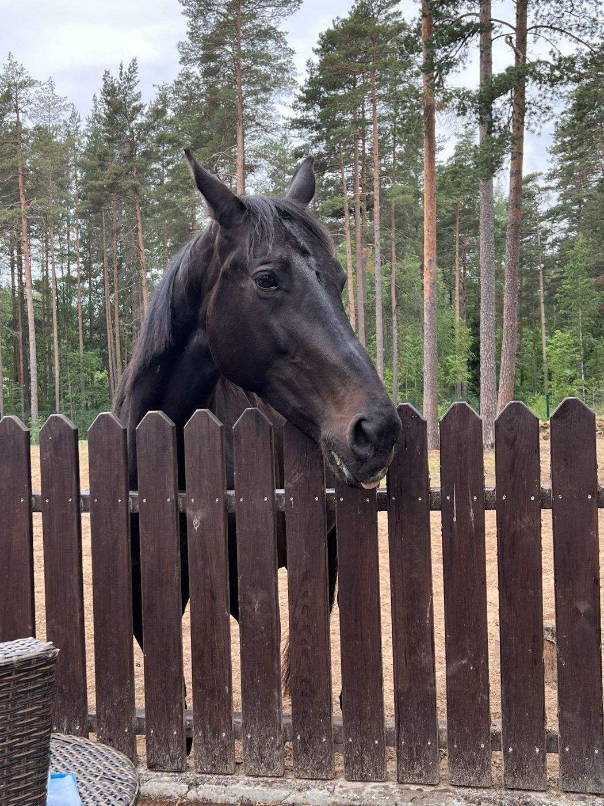

Berģi · Ropažu novads · LWHORSE
Lēras ciltskoks

Tumši bēra ķēve no Narvaišiem, dzimusi 2008. gada pavasarī. Viņas mātes līnija datubāzē aiziet septiņas paaudzes atpakaļ — līdz ķēvei, kas dzimusi 1961. gadā.
- Vārds
- Lēra
- ID numurs
- LV060531950001
- Dzimusi
- 15.03.2008., Narvaišos
- Krāsa
- Tumši bēra
- Šķirne
- Latvijas siltasinis
Ciltsraksti
četras paaudzesLēravecākivecvecākivecvecvecāki
tēva puse
mātes puse
punktētā apmale = ciltsmāte
Ciltsmāšu koki
Ielādē…
aplis = ķēve
kvadrāts = ērzelis
skaitlis labajā malā = kumeļu skaits
Dziļā līnija
septiņas paaudzesCiltsrakstu tabula rāda četras paaudzes, bet mātes līnija iet tālāk. Aiz Avenes (1988) seko Mode, tad Dina jeb Defina (1970) un beigās Fistaška, dzimusi 1961. gadā — no viņas sākas viss koks zemāk.
Lērai ir kumeļš. Datubāzē reģistrēts Claudio (2011), tēvs Calliano — tas pats ērzelis, kas Chloé kokā ir Winderlines tēvs. Abas līnijas kaut kur sadodas rokās.